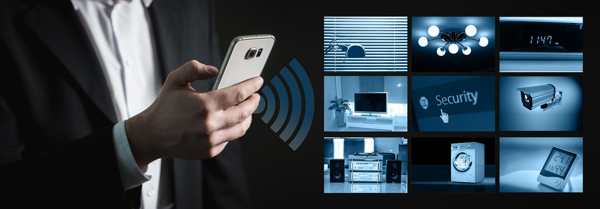

At Smart Home Security, we understand that your home's safety is paramount. That's why we offer comprehensive 24/7 monitoring services that keep a vigilant watch over your property, day and night. Our state-of-the-art monitoring systems ensure immediate response to any potential threats or emergencies, providing you with unmatched peace of mind.
Real-time Alerts: Receive instant notifications on your smartphone or device the moment any unusual activity is detected.
Professional Monitoring: Our team of trained professionals keeps a watchful eye on your home round-the-clock, ready to respond to any alarm activations.
Backup Systems: Even during power outages or internet disruptions, our monitoring systems remain operational, ensuring continuous protection.
Immediate Response: Our rapid response ensures swift action in critical situations, safeguarding your home and loved ones.
Enhanced Security: With continuous monitoring, you can deter potential intruders and prevent incidents before they occur.
Peace of Mind: Rest easy knowing that your home is under the constant care of our dedicated monitoring team.